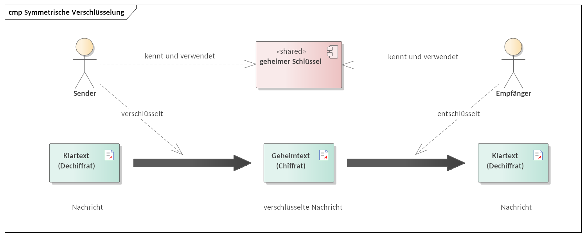
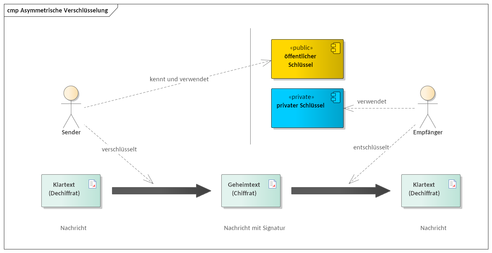
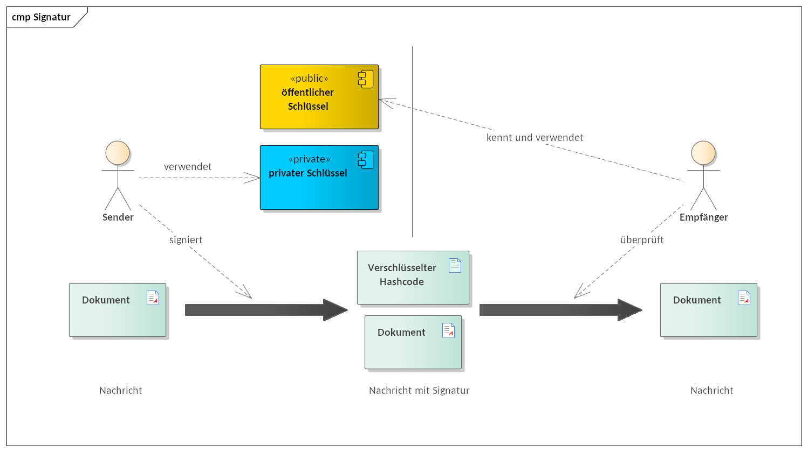
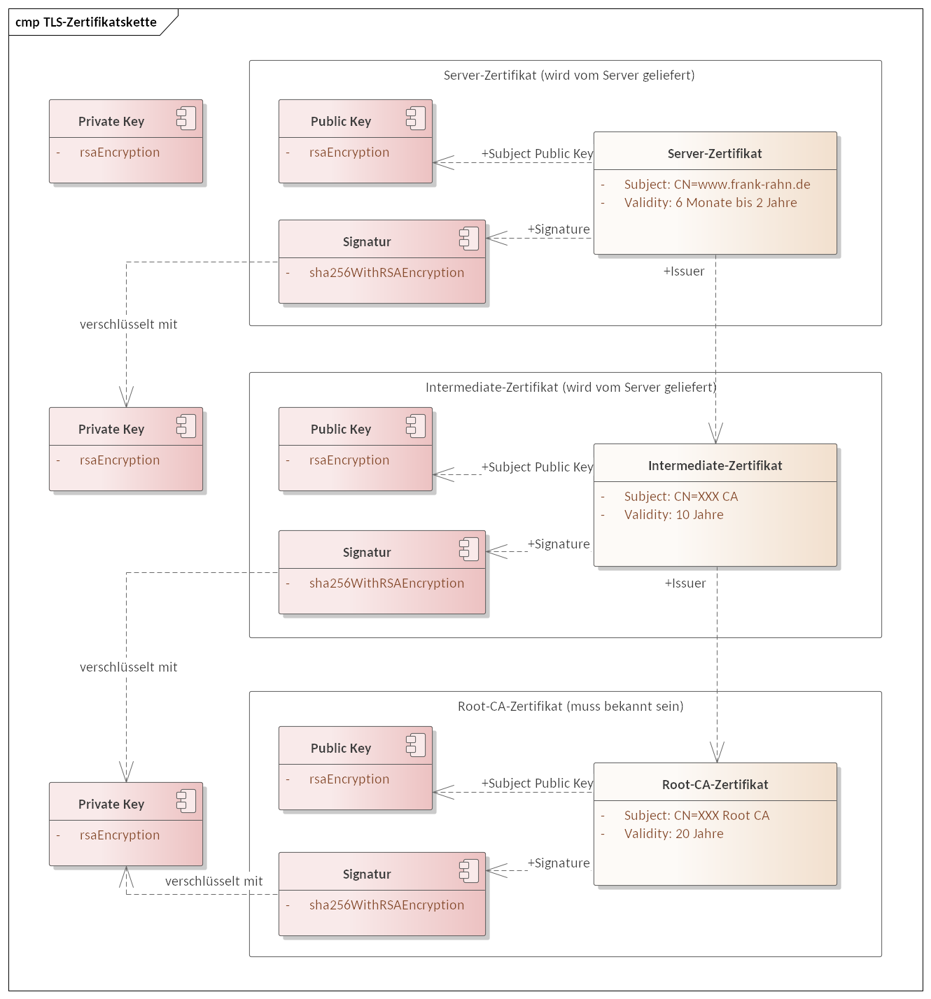
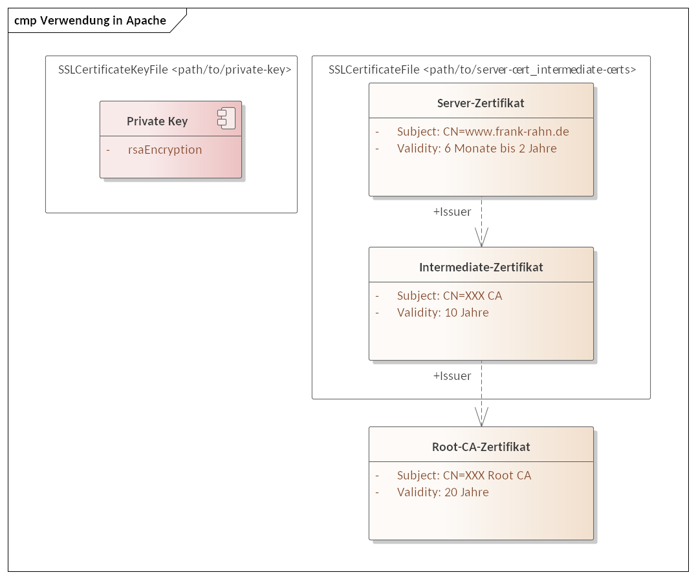
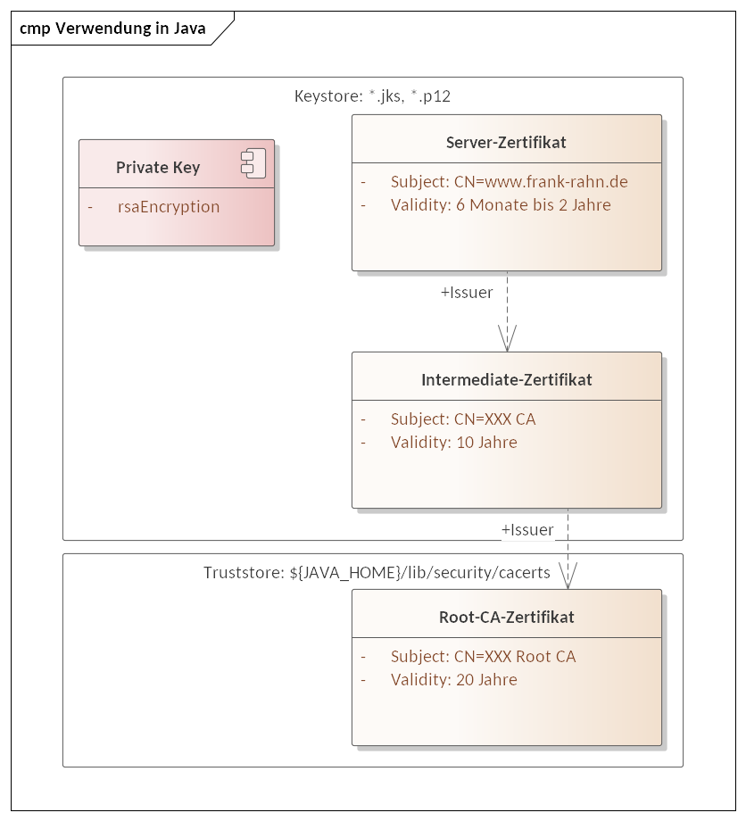

Verschlüsseln und so …
Base64, Hashcode, Schlüssel, Signieren, X.509 Zertifikate, TLS, mTLS, …
Erstellt von Frank Rahn
Abstrakt
{Abstrakt}
Tastenkombinationen
- Space oder N springt zur nächsten Folie
- P springt zur vorherigen Folie
- F zeigt die Präsentation im Vollbildmodus
- B zeigt die Pause Folie
- Esc oder O zeigt die Übersicht der Folien
- S wird die Speakers-Ansicht gestartet
Navigation
- → oder L springt zum nächsten Kapitel
- ← oder H springt zum vorherigen Kapitel
- ↓ oder J springt eine Folie nach unten
- ↑ oder K springt eine Folie nach oben
Über mich
Kontakt

Zur Person
Seit 1992 arbeite ich als freiberuflicher unabhängiger Softwarearchitekt und -consultant.
Seitdem beschäftige ich mich mit dem Entwurf und der Realisierung von Anwendungen und verfüge über umfangreiche Erfahrungen in der Integration von Anwendungen.
Meine Einsatzbereiche
- Softwarearchitekturen mit Java-Technologien
- mit Spring Framework, Boot, Batch, ...
-
Integration von unternehmensübergreifenden IT-Systemen
- per REST, SOAP, ...
- Entwicklung von großen und komplexen Systemen
- Performance-Analysen mit entsprechender Optimierung
Base64 Kodierung
Base64 ist ein Verfahren zur Kodierung von 8-Bit Binärdaten
Zeichensatz
- Der Zeichensatz besteht aus 64 Zeichen
- Jedes Zeichen wird mit 6-Bit kodiert
- Zusätzliches Zeichen ist das = für das Ende
| A | ⇒ | 000000 | … | Z | ⇒ | 011001 |
| a | ⇒ | 011010 | … | z | ⇒ | 110011 |
| 0 | ⇒ | 110100 | … | 9 | ⇒ | 111101 |
| + | ⇒ | 111110 | / | ⇒ | 111111 |
Kodierung
- Jeweils 24-Bit (3 Bytes) werden in 6-Bit große Blöcke aufgeteilt
- Jeder dieser 6-Bit wird ein Zeichen aus dem Zeichensatz zugeordnet
Kodierung
- Padding: Falls die letzten 3-Bytes nicht vollständig sind werden sie mit Nullbytes (0x00) aufgefüllt
- Die 6-Bit Blöcke, die vollständig aufgefüllt wurden, werden mit = kodiert
- Eine kodierte Zeile wird typischerweise nach 76 Zeichen umgebrochen
Base64 Beispiel
Klartext
Frank Rahn, Neusser Str. 594, 50737 Köln.
Base64
RnJhbmsgUmFobiwgTmV1c3NlciBTdHIuIDU5NCwgNTA3MzcgS8O2bG4uCg==
Hashfunktion und Hashcode
Hashfunktionen
- Eine Hashfunktion bildet eine große Eingabemenge auf eine keine Zielmenge ab
- Die Hashfunktionen sind gerichtet und nicht umkehrbar (nicht injektiv)
- Einfache Funktionen sind Prüfziffern, Quersummen, Prüfsummen, …
- Höherwertige Funktionen sind kryptografische Hashfunktionen zur Integritätsprüfung
Hashcode SHA256
…
Verschlüsselung
Symmetrische Verschlüsselung
Asymmetrische Verschlüsselung
Vergleich der Verschlüsselungen
| Schlüssel | Symmetrisch | Asymmetrisch |
|---|---|---|
| Kryptoverfahren | AES | RSA |
| Anzahl Schlüssel | 1 (Key) | 2 (Key Pair) |
| Schlüssellänge in Bits | ||
| Geschwindigkeit | schnell | langsam |
Vergleich der Verschlüsselungen
- Geschwindigkeitsunterschied der beiden Verfahren *100 bis *1.000
- Der geheime Schlüssel (Symmetrisch) muss auf beiden Seiten bekannt und geschützt werden
- Der private Schlüssel (Asymmetrisch) muss geschützt werden
Signieren
Signieren mit asymmetrische Schüssel
Signieren mit SHA256withRSA
Zertifikat
X.509 Zertifikate
TLS
Transport Layer Security
Root-CA-Zertifikat, Intermediate-Zertifikat und Server-Zertifikate sowie mTLS
TLS und Zertifikatsketten
CN: Common Name
TLS im Apache
TLS mit Java
Vielen Dank für Ihre Aufmerksamkeit!
Lizenzen
 (CC BY-ND 4.0)
(CC BY-ND 4.0)
Dieses Werk ist unter der Creative-Commons-Lizenz vom Typ Namensnennung - Keine Bearbeitungen 4.0 International lizenziert.
Um eine Kopie dieser Lizenz einzusehen, besuchen Sie https://creativecommons.org/licenses/by-nd/4.0/deed.de oder schreiben Sie einen Brief an Creative Commons, 444 Castro Street, Suite 900, Mountain View, California, 94041, USA.
Backlog
Offene Punkte
- PKCS #1
-
ASN.1 (Abstract Syntax Notation One)
- JavaScript Decoder
- Hierarchische strukturierte Datentypen
- X.5xx Dokumente?